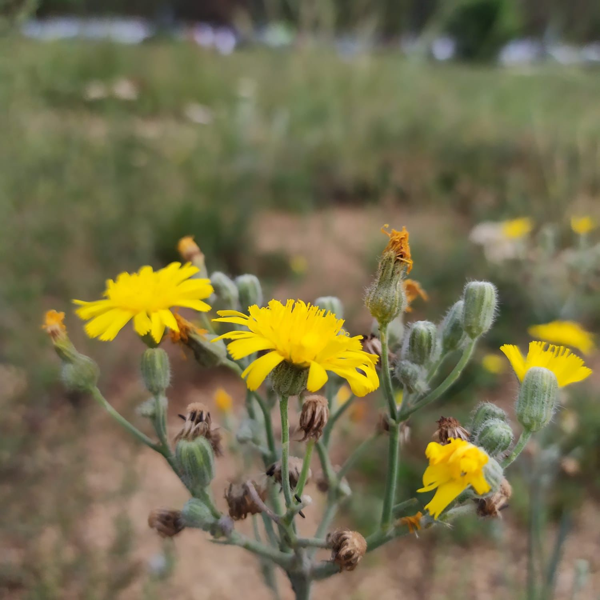

Природный ареал ястребиночки находиться на территории Северного полушария. В диком виде это растение довольно часто встречается в сухих смешанных и сосновых лесах, на опушках, в местах вырубки, на склонах гор и холмов в Центральной и Восточной Европе, а также в Западной и Средней Азии. Растение было натурализировано на территории Северной Америки, где в наши дни считается довольно грозным, опасным сорняком. Все дело в том, что это растение содержит природные алкалоиды, которые приводят к гибели домашнего скота (особенно овец).
В культуре растение выращивается преимущественно в Восточной Европе и в Азии как довольно распространенное, медоносное, лекарственное, декоративное и ядовитое растение.
Ястребиночка – небольшое, компактное, декоративное растение, с крупными, яркими соцветиями-корзинками, которое довольно часто используют для озеленения и украшения садов и приусадебных участков. Оно прекрасно подойдёт для декоративного оформления клумб, рабаток, каменистых садов и альпийских горок.
Кроме довольно привлекательного внешнего вида, это растение имеет и ярко выраженные лекарственные свойства. В народной медицине соцветия используют при болезнях желудка, желтухе, для возбуждения аппетита, от туберкулеза лёгких, лихорадочной реакции, нарывах в горле, как кровоостанавливающее средство, при дизентирии, геморрое, маточных кровотечениях, катаре толстых кишок, при кровотечениях из лёгких, для рассасывания опухолей кровеносных сосудов, как ранозаживляющее средство, свежие листья прикладывают к нарывам.
В ветеринарии используют против глистов, особенно у свиней, отваром растения моют больных животных, экстракт применяют против бруцеллёза. Эссенцию из свежих растений используют в гомеопатии.
Растение содержит дубильные вещества, смолу, слизь, кумарин и флавоноиды. Ястребинка волосистая — посредственный летний медонос, цветки охотно посещают пчёлы, хотя медопродуктивность её незначительная.
